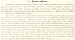

Click on images to enlarge
{kind=link}

Fig. 1. Paropsis sublineata, description
Name
Paropsis sublineata Boheman, 1859
Corresponds to
T. sublineata does not correspond to any species known to the author.
Diagnosis and Notes
Blackburn did not see the type of sublineata, but indicates that it is one of the species he has been able to "identify confidently by means of the description". He places it into his "Group iv", a mixed bag of species characterized by (1) the sides of the prothorax evenly arched (not mucronate in front), (2) the puncturation of the elytra in about 20 rows, and (3) the elytra devoid of verrucae. This group includes just a few species of non-verrucose Trachymela - the bulk of its species are now placed in Peltoschema or Paropsisterna. In his key to the species in this group, sublineata is identified by:
A. Elytra with a distinct subbasal impression;
BB. Lateral margins of prothorax not or scarcely explanate;
C. The subbasal impression of the elytra extremely strong.
Considering that Blackburn did not see a type, his couplets A and C of the key are somewhat puzzling, as Boiduvals's description does not explicitly indicate the presence of a subbasal impression at all. It is possible (and seems to be implied in Blackburn's notes) that Blackburn identified an actual specimen to this species from the description, and then used this specimen's characteristics in his key. This presence of a subbasal impression is supported by Weise (1923) in his description of T. ordinaria, where he contrast ordinaria with sublineata, noting that the two species are very similar in appearance but ordinaria differs in having a weak postbasal impression.
Original description
Translation of original description (Figure 1) by ChatGPT, 04/2026:
Rounded, convex, ferruginous, shining; head posteriorly, antennae outwardly, and the chest blackish-piceous; prothorax on the disc finely and rather closely, on the sides deeply punctate, these arcuately impressed; elytra with larger and smaller punctures mixed, rather closely impressed, longitudinally lined with testaceous lines, the lines here and there somewhat interrupted. -- Length 6 mm; width 5 mm.
Habitat: New Holland (Sydney).
Head short, slightly convex, ferruginous, shining, closely and distinctly punctate, the base transversely infuscate, between the eyes obscurely channelled, anteriorly with a slight transverse impression. Palpi reddish-ferruginous. Eyes oval, convex, dark brown. Antennae fairly long, slender, blackish-piceous, the four basal segments reddish-ferruginous. Prothorax nearly three times broader than long, apically sinuated on each side, base slightly rounded; sides narrowly margined, narrowed anteriorly and posteriorly, moderately expanded and rounded at the middle; anterior angles somewhat projecting forward, subacute; posterior angles obtuse. Above convex, ferruginous, shining; disc finely punctate, sides deeply punctate and rather deeply, sharply impressed. Scutellum somewhat triangular, ferruginous, shining, with a few small punctures at the base. Elytra anteriorly truncate, somewhat broader than the base of the pronotum, scarcely longer than wide, humeri rounded; sides slightly expanded behind the middle; apex broadly rounded conjointly; dorsally convex, posteriorly sloping; punctures of two sizes mixed, rather closely impressed; ferruginous, shining, each elytron ornamented with nine narrow testaceous lines, here and there interrupted; supra-humeral callus dark brownish; lateral margin paler ferruginous. Underside shining. Chest blackish-piceous. Abdomen dark ferruginous. Legs paler ferruginous, shining, punctate; tarsi brown.
References
Boheman, C.H. 1859, "Coleoptera. Species novas descripsit", Ed. Virgin, C.A., Kongliga Svenska Fregatten Eugenies Resa omkring jorden under befäl af C.A. Virgin Åhren 1851-1853. Vettenskapliga iakttagelser på H.M. Konung Oscar Den Förstes befallning., 113-218, P.A. Norstedt & Söner, Stockholm (page 174).
Weise, J. 1923. Chrysomeliden und Coccinelliden aus Queensland. Arkiv för Zoologi 15(12): 1-150 (page 66).
Copyright © 2026. All rights reserved.